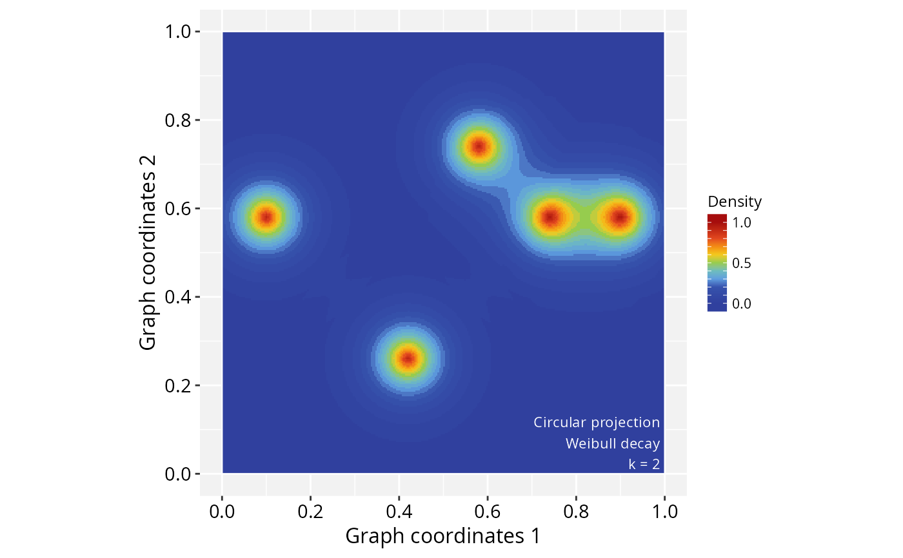

Plotting 2D-landscape images for the PathwaySpace package
Source:R/pspacePlots.R
plotPathwaySpace-methods.RdplotPathwaySpace is a wrapper function to
create dedicated ggplot graphics for PathwaySpace-class objects.
Usage
# S4 method for class 'PathwaySpace'
plotPathwaySpace(
ps,
colors = pspace.cols(),
bg.color = "grey95",
si.color = "grey85",
si.alpha = 1,
theme = c("th0", "th1", "th2", "th3"),
title = "PathwaySpace",
xlab = "Pathway coordinates 1",
ylab = "Pathway coordinates 2",
zlab = "Density",
font.size = 1,
font.color = "white",
zlim = NULL,
slices = 25,
add.grid = TRUE,
grid.color = "white",
add.summits = TRUE,
label.summits = TRUE,
summit.color = "white",
add.marks = FALSE,
marks = NULL,
mark.size = 3,
mark.color = "white",
mark.padding = 0.5,
mark.line.width = 0.5,
use.dotmark = FALSE,
add.image = FALSE
)Arguments
- ps
A PathwaySpace class object.
- colors
A vector of colors.
- bg.color
A single color for background.
- si.color
A single color for silhouette. (see
silhouetteMapping).- si.alpha
A transparency level in
[0, 1], used to adjust the opacity of the silhouette. This parameter is useful for improving the perception of a background image, when one is available.- theme
Name of a custom PathwaySpace theme. These themes (from 'th0' to 'th3') consist mainly of preconfigured ggplot settings, which the user can subsequently refine using
ggplot2.- title
A string for the title.
- xlab
The title for the 'x' axis of a 2D-image space.
- ylab
The title for the 'y' axis of a 2D-image space.
- zlab
The title for the 'z' axis of the image signal.
- font.size
A single numeric value passed to plot annotations.
- font.color
A single color passed to plot annotations.
- zlim
The 'z' limits of the plot (a numeric vector with two numbers). If NULL, limits are determined from the range of the input values.
- slices
A single positive integer value used to split the image signal into equally-spaced intervals.
- add.grid
A logical value indicating whether to add gridlines to the image space. However, gridlines will only appear when the image is decorated with graph silhouettes (see
silhouetteMapping).- grid.color
A color passed to
geom_point.- add.summits
A logical value indicating whether to add contour lines to 'summits' (when summits are available; see
summitMapping).- label.summits
A logical value indicating whether to label summits.
- summit.color
A color passed to 'summits'.
- add.marks
A logical value indicating whether to plot vertex labels.
- marks
A vector of vertex names to be highlighted in the image space. This argument overrides 'add.labels'.
- mark.size
A size argument passed to
geom_text.- mark.color
A color passed to
geom_text.- mark.padding
A box padding argument passed to
geom_text_repel.- mark.line.width
A line width argument passed to
geom_text_repel.- use.dotmark
A logical value indicating whether "marks" should be represented as dots.
- add.image
A logical value indicating whether to add a background image, when one is available (see
GraphSpace).
Examples
# Load a demo igraph
data('gtoy1', package = 'RGraphSpace')
# # Check graph validity
gs <- GraphSpace(gtoy1)
#> Validating the 'igraph' object...
#> Creating a 'GraphSpace' object...
gs <- normalizeGraphSpace(gs)
#> Normalizing node coordinates to graph space...
# Create a PathwaySpace object
ps <- buildPathwaySpace(gs, nrc = 300)
#> Validating arguments...
#> Creating a 'PathwaySpace' object...
# note: adjust 'nrc' to increase image resolution
# Set '1s' as vertex signal
vertexSignal(ps) <- 1
# Create a 2D-landscape image
ps <- circularProjection(ps, k = 2,
decay.fun = weibullDecay(pdist = 0.4))
#> Validating arguments...
#> Using circular projection...
#> Mapping 'x' and 'y' coordinates...
#> Running signal convolution...
# Plot a 2D-landscape image
plotPathwaySpace(ps)
